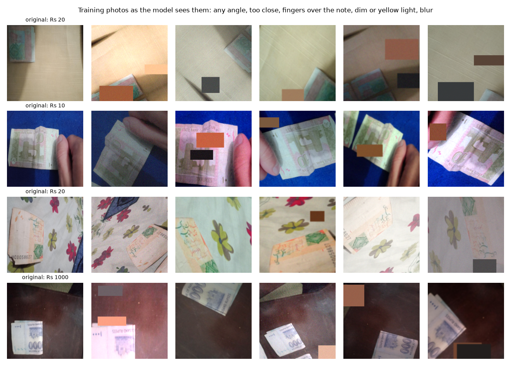
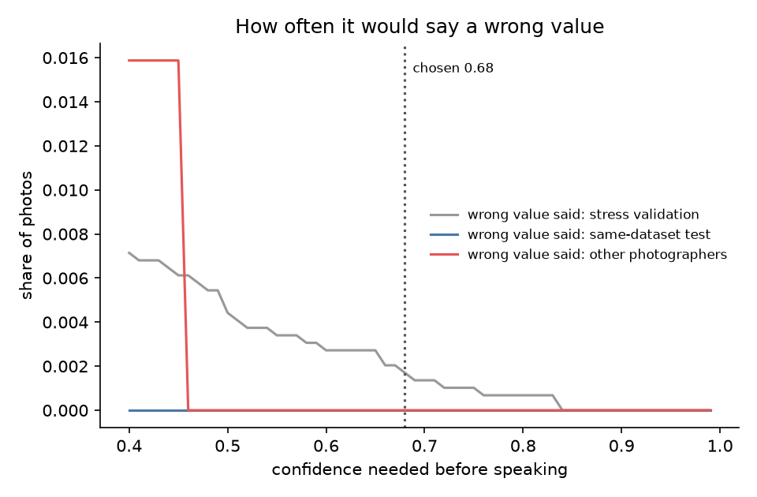
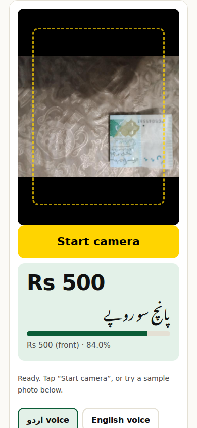

Point your phone at a banknote. It says the value out loud, in Urdu.
Hassan Ali Mehdi · BSCS-7A · Superior University, Lahore
Instructor: Dr. Munir Ahmad

Today the answer is: ask a stranger, and trust them.
| Model | Params | Same dataset | Other people | CPU |
|---|---|---|---|---|
| CNN from scratch | 2.36M | 99.6% | 82.5% | 88 ms |
| MobileNetV3-Large | 4.22M | 100.0% | 92.1% | 15 ms |
| MobileNetV4-Conv-Medium | 8.45M | 99.9% | 92.1% | 37 ms |
Same data, same recipe. Highlighted: deployed (best on validation).
The same-dataset score mostly shows how alike those photos are.
The other two are what a user would get.


Thank you, Dr. Munir Ahmad.